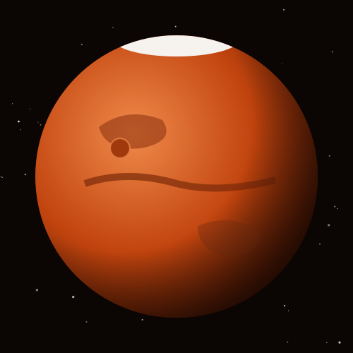
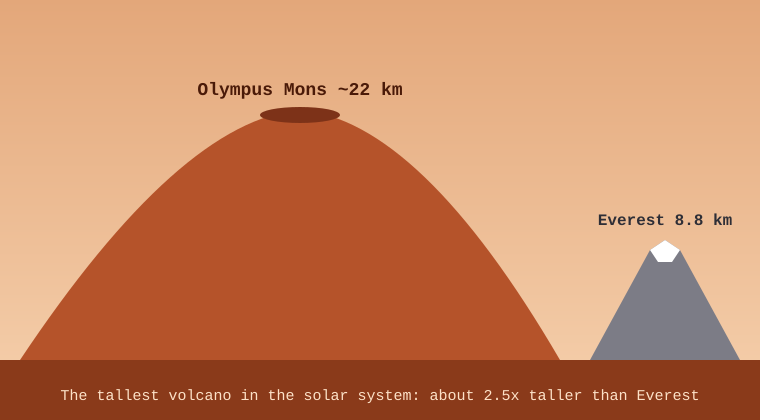

The Red Planet
Mars gets its red color from iron oxide (rust) in its rocks and dust. It is named after the Roman god of war.
Mars is a cold desert today, but dried-up river valleys and lake beds show that water once flowed across its surface. Rovers like Curiosity and Perseverance are searching for signs of ancient life.

Mars Facts
- SizeAbout 6,779 km across, about half the width of Earth.
- DistanceAbout 228 million km (1.52 AU) from the Sun.
- DayA Martian day, called a sol, lasts 24 hours and 37 minutes.
- YearOne orbit takes 687 Earth days.
- MoonsTwo small moons: Phobos and Deimos.
- TemperatureAverages about −65 °C.
- GravityAbout 38% of Earth's.
What Would You Weigh on Mars?
Mars has only 38% of Earth's gravity. Enter your weight to find out how heavy you'd feel there.

Home of Giants
Olympus Mons is the tallest volcano in the solar system, about 22 km high and as wide as the state of Arizona.
Mars also has Valles Marineris, a canyon system about 4,000 km long. It would stretch across the entire United States.